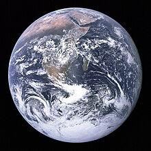

Nature is an inherent character or constitution,particularly of the ecosphere or the universe as a whole. In this general sense nature refers to the laws, elements and phenomena of the physical world, including life. Although humans are part of nature, human activity or humans as a whole are often described as at times at odds, or outright separate and even superior to nature.

During the advent of modern scientific method in the last several centuries, nature became the passive reality, organized and moved by divine laws. With the Industrial Revolution, nature increasingly became seen as the part of reality deprived from intentional intervention: it was hence considered as sacred by some traditions (Rousseau, American transcendentalism) or a mere decorum for divine providence or human history (Hegel, Marx). However, a vitalist vision of nature, closer to the pre-Socratic one, got reborn at the same time, especially after Charles Darwin.

Within the various uses of the word today, "nature" often refers to geology and wildlife. Nature can refer to the general realm of living beings, and in some cases to the processes associated with inanimate objects—the way that particular types of things exist and change of their own accord, such as the weather and geology of the Earth. It is often taken to mean the "natural environment" or wilderness—wild animals, rocks, forest, and in general those things that have not been substantially altered by human intervention, or which persist despite human intervention.
Earth is the only planet known to support life, and its natural features are the subject of many fields of scientific research. Within the Solar System, it is third closest to the Sun; it is the largest terrestrial planet and the fifth largest overall. Its most prominent climatic features are its two large polar regions, two relatively narrow temperate zones, and a wide equatorial tropical to subtropical region. Precipitation varies widely with location, from several metres of water per year to less than a millimetre. 71 percent of the Earth's surface is covered by salt-water oceans. The remainder consists of continents and islands, with most of the inhabited land in the Northern Hemisphere.Earth has evolved through geological and biological processes that have left traces of the original conditions. The outer surface is divided into several gradually migrating tectonic plates. The interior remains active, with a thick layer of plastic mantle and an iron-filled core that generates a magnetic field. This iron core is composed of a solid inner phase, and a fluid outer phase. Convective motion in the core generates electric currents through dynamo action, and these, in turn, generate the geomagnetic field. The atmospheric conditions have been significantly altered from the original conditions by the presence of life-forms, which create an ecological balance that stabilizes the surface conditions. Despite the wide regional variations in climate by latitude and other geographic factors, the long-term average global climate is quite stable during interglacial periods, and variations of a degree or two of average global temperature have historically had major effects on the ecological balance, and on the actual geography of the Earth.
